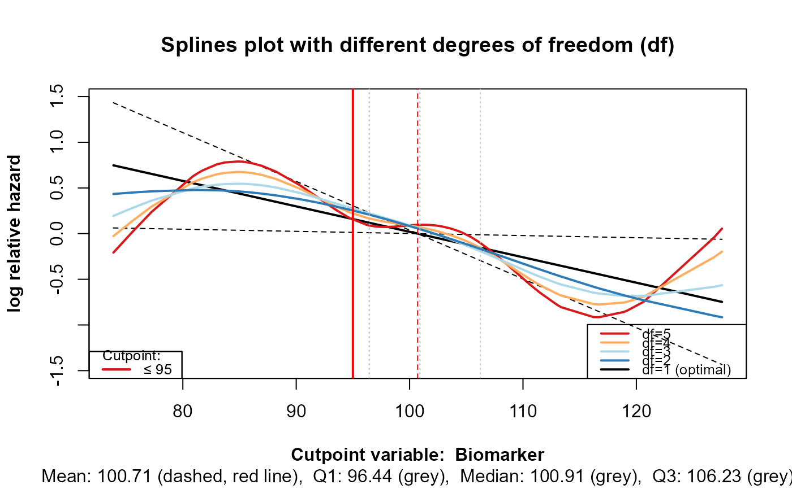

cpobj objectR/cp_splines_plot.R
cp_splines_plot.RdCreate penalized smoothing splines plot with different degrees of freedom and shows the cutpoints of the dichotomised variable.
cp_splines_plot(cpobj, show_splines = TRUE, adj_splines = TRUE)list, contains variables for pspline plot:
nb_of_cp (number of cutpoints)
cp (contain one or two cutpoint/s)
dp (digits for plot)
cpvarname (name of the variable for that the cutpoints are estimated)
cpdata a data frame, contains the following variables: a variable that is
dichotomized, time (follow-up time), event (status indicator),
covariates (a vector with the names of the covariates and/or factors))
logical, if TRUE, The plot shows splines with
different degrees of freedom. This may help determine whether
misspecification or overfitting occurs.
logical, if TRUE, the splines are adjusted for the
covariates. Default is TRUE.
Plots penalized smoothing splines and shows the cutpoints.
cp_est() for main function of the package, cp_value_plot()
for Value plots and Index plots
cpvar <- rnorm(100, mean = 100, sd = 10)
time <- seq(1, 100, 1)
event <- rbinom(100, 1, 0.5)
datf <- data.frame(time, event, cpvar)
plot_splines_list <- list(cpdata = datf, nb_of_cp = 1, cp = 95, dp = 2,
cpvarname = "Biomarker")
cp_splines_plot(plot_splines_list)
